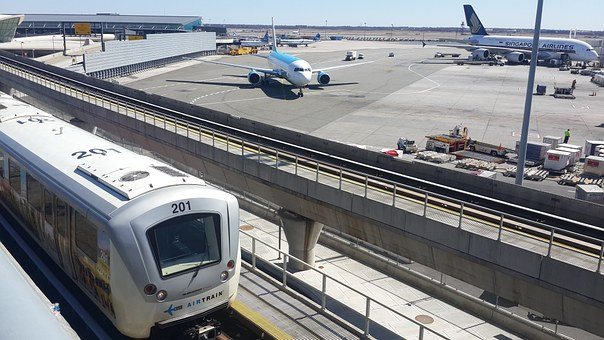
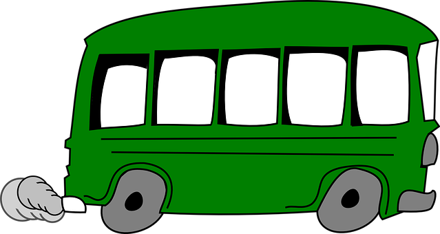
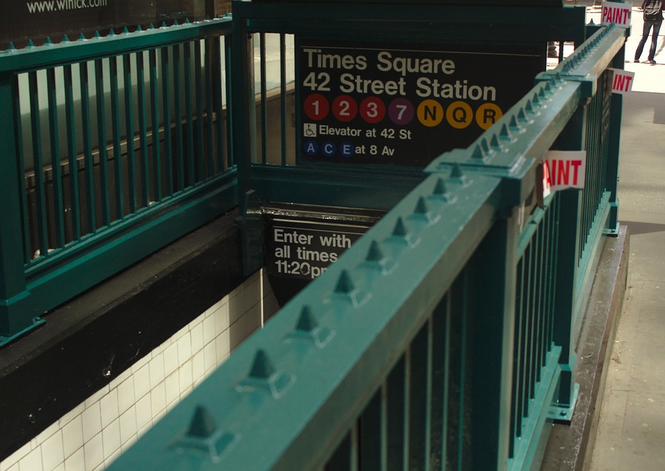

If you want to start your visit to New York City off on the right foot, you'll want to make your arrival to the Big Apple as easy possible. So, how do you plan on getting from JFK Airport to your hotel in Manhattan?
Well, here are five ways you can travel from JFK to anywhere in Manhattan. What's best for you depends on your budget and any time constraints you may have. Happy Traveling!
Transportation from Kennedy Airport:

If you want to save some money traveling back and forth to JFK Airport, than the Airtrain to the subway, and the subway to your hotel is the best way to go. It will only cost you a very economical $7.25 per person. Airtrain at JFK Airport But be forewarned, you'll have to drag your luggage up and down a lot of stairs, and then you still have to get from the subway station to your hotel.
You can board the Airtrain in the airport and travel to either the Howard Beach Station, where you can catch the A Train, or Sutphan Boulevard Station, where you can catch the E, J or Z Train. The Airtrain costs $5.00 and entrance to the subway system costs $2.75 totally $7.75.Airtrain!

There are several Airport Shuttle companies to choose from and truthfully, if you have a large party traveling with you (more then 4 adults), this might be the best way to go unless you hire a private transportation.
Once you reach the airport, you can proceed to the Ground Transportation desk to get information on where you catch your shuttle, or you can use one of the courtesy phones in the baggage claim area. Keep in mind that you may not be the only passenger in the van, and you may have to go along for the ride while other passengers are dropped off at their destination first.
Useful link might be:Shuttle bus

The estimated cost to Manhattan, Queens or Brooklyn is currently $7.50, which includes the $5 AirTrain entry/exit fee and the $2.75
MTA subway fare (per person). First-time purchase at vending machines of new MetroCard is $1; with free refills.
Stations are most often named after the street on which they’re located. Entrances are marked with a green and white globe (open 24 hours) or a red and white globe (limited hours). Many stations have separate entrances for the uptown and downtown platforms—look before you pay. Trains are identified by letters or numbers, color-coded according to the line on which they run. Local trains stop at every station on the line; express trains stop at major stations only.
Getting to NYC
- Estimated travel time:
- 50 mins to midtown Manhattan's NY Penn Station using E subway at Jamaica Station;
- 60 mins to Lower Manhattan (up to West 14th Street) via A subway at Howard Beach Station;
- 75 mins to Upper Mahattan's West 125th Street via E Subway at amaica Station & trasnsfer in Manhatan to either subway or bus.
- 50 mins to South Queens or North Brooklyn, via J or Z Subway at Jamaica Station;